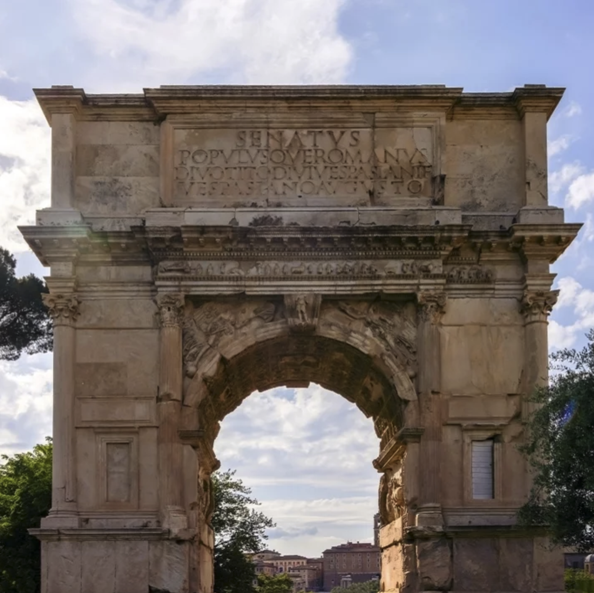
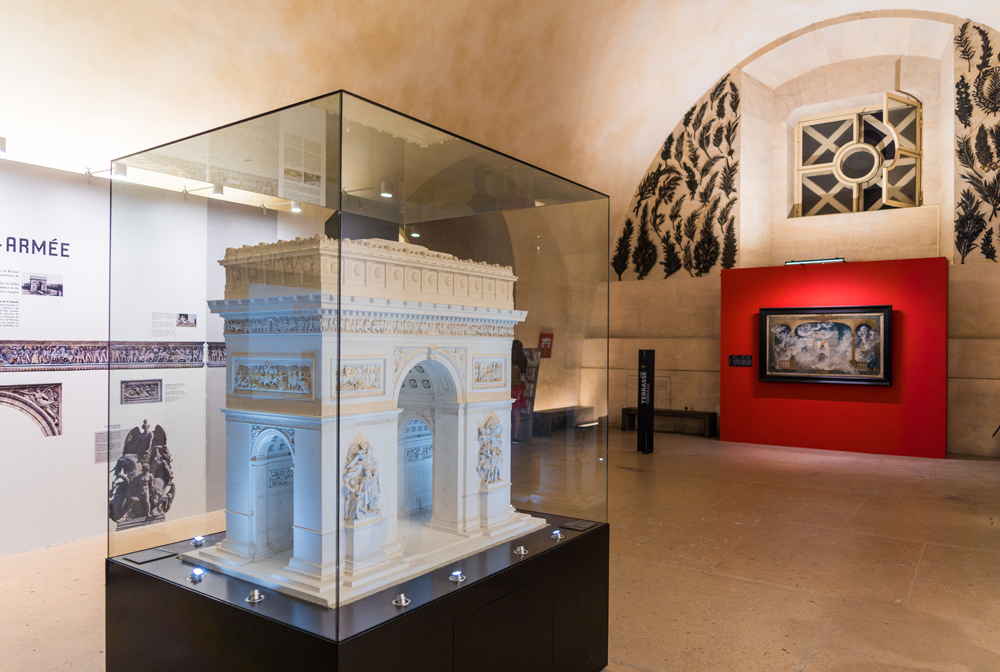
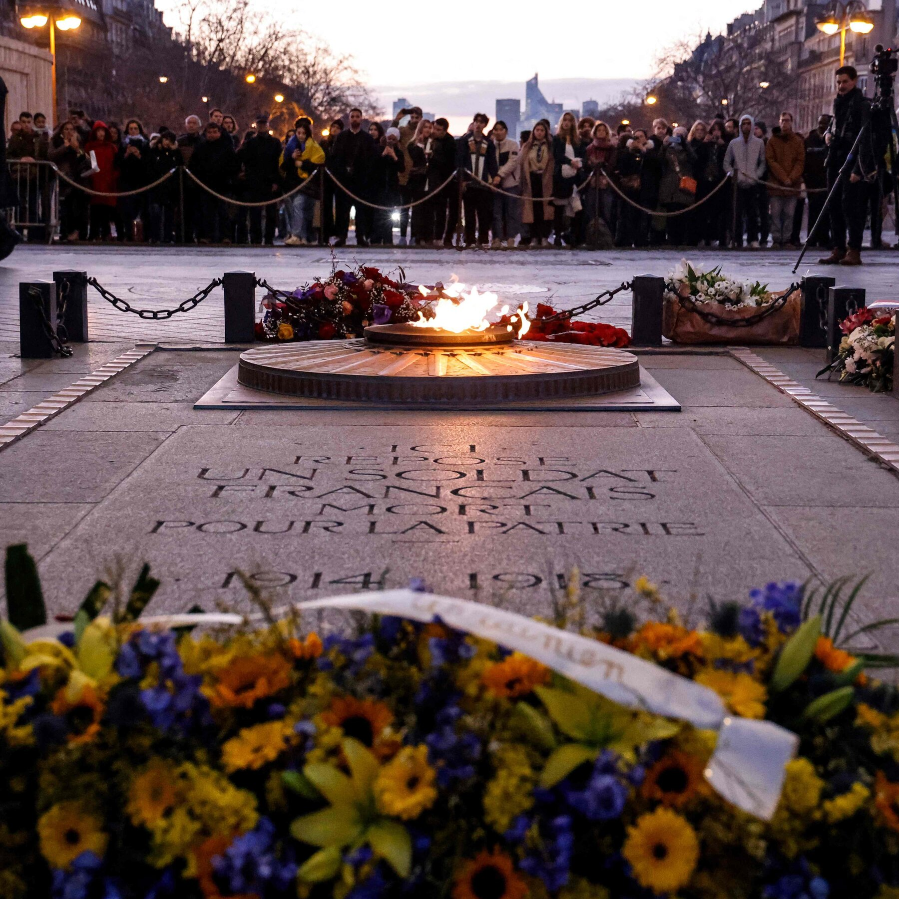
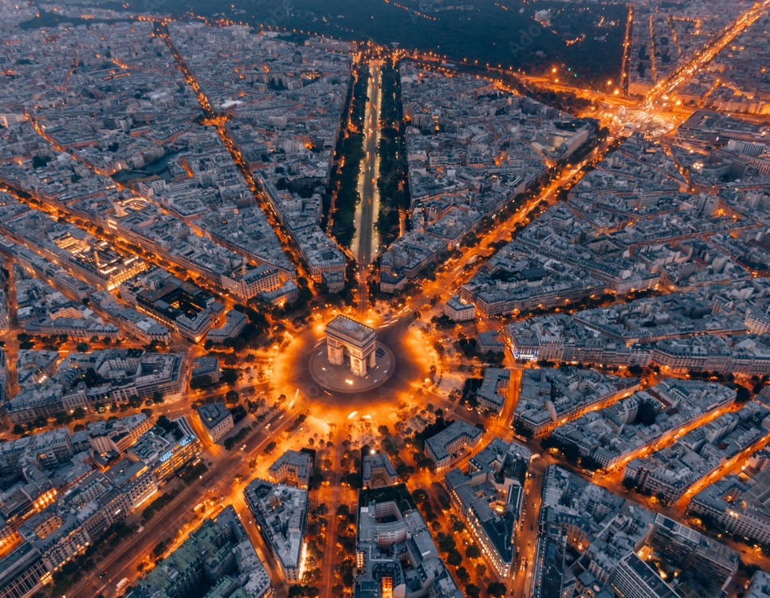
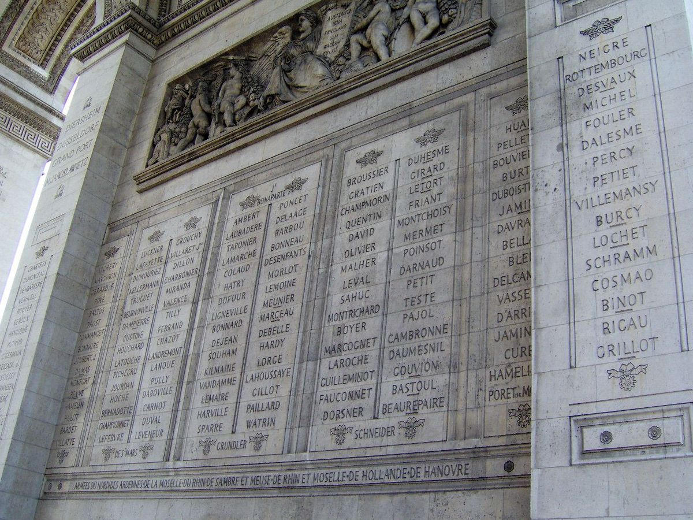
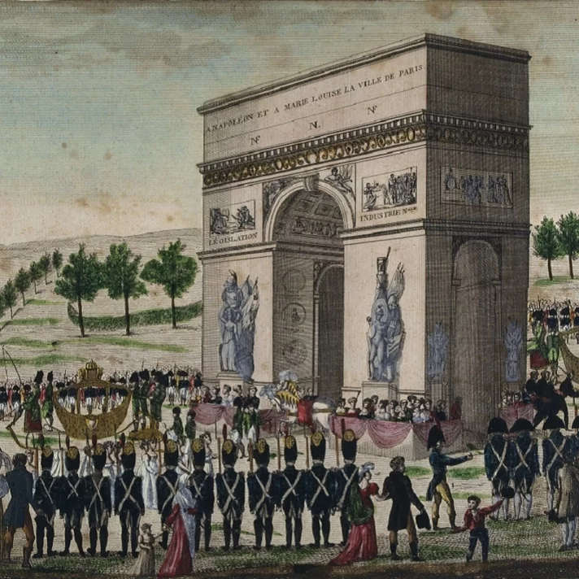
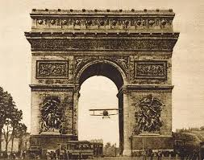
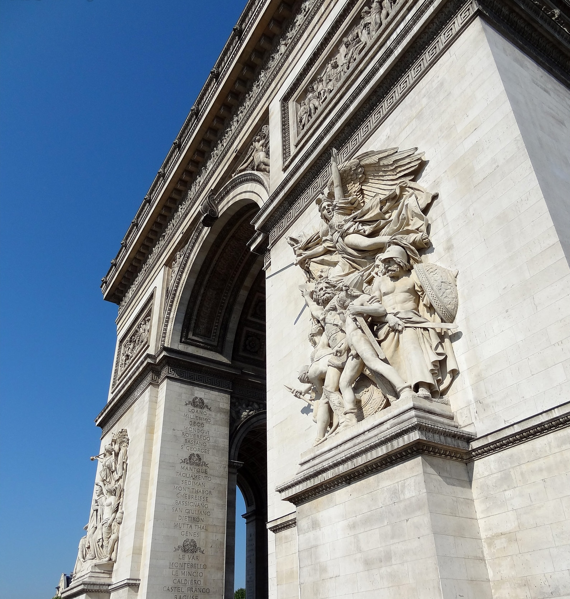

Annual tourists (2025): 1.85 million
Low season: Jan to March.
High season: April to Oct.
The Arc de Triomphe is located on the right bank of the Seine at the centre of a dodecagonal configuration of twelve radiating avenues. It was commissioned in 1806, after the victory at Austerlitz by Emperor Napoleon at the peak of his fortunes. On July 29, 1836, after 30 years of construction, the Arc de triomphe was finally inaugurated.

You can choose to visit for free or pay 24 to climb the tower, 284 stairs.

As you climb the 284 steps along the spiral staircases, you'll pass through a small museum and gift shop where you can catch your breath and discover the fascinating story behind Napoleon's grand vision. The exhibits showcase old sketches, models, and even some of the original design details of the monument.
There is an elevator, but it is not always accessible.

Beneath the Arc de Triomphe lies the Tomb of the Unknown Soldier, honoring those who lost their lives during World War I. Every evening at 6:30 PM, a solemn ceremony takes place to rekindle the eternal flame, a tradition that has continued every single night since 1923.

From the top, you will see twelve grand avenues radiating outward like the points of a star, a design that gives the square its nickname, Place de l'Étoile. Time your visit for sunset and you will watch the Eiffel Tower sparkle in the distance while the Champs-Élysées glows with golden streetlights.
The arch was built to celebrate military victories, and many of those victories are carved directly into its walls. The names of French generals are also inscribed there. If a name is underlined, it means that the general died in battle.

Commissioned by Napoleon to celebrate France's military triumphs, the first stone of this majestic arch was laid on his birthday, August 15, 1806. However, construction stretched over three decades and was not completed until 1836, long after Napoleon's death in 1821.

One of the most stirring moments in its history took place in 1919, when French pilot Charles Godefroy daringly flew a Nieuport biplane through the arch. The bold flight was a symbolic gesture marking the end of World War I.

The Arc de Triomphe is adorned with a series of sculptures created by some of the greatest French artists of the 19th century, each representing a significant theme in the nation's history. The most famous is Departure of the Volunteers of 1792 by François Rude, which depicts volunteers from Marseille fighting for the National Guard during the French Revolution. The story behind these volunteers inspired France's national anthem, “La Marseillaise.”
